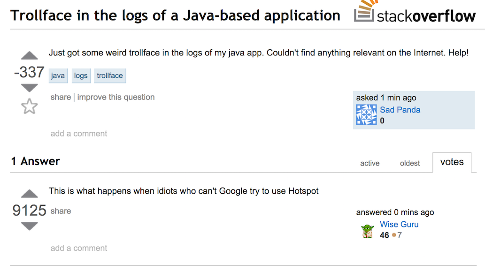
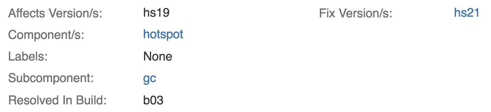

The Mysteries Lie In Our Heads
(Not In The JVM)
#openjdk #mystery #hotspot
#topconf

≈ 5.5M LOC
hundreds of thousands
of person-hours
It's a big and complex system
- A single person cannot know all the things
- Abstractions will leak unavoidably
- Unexpected things will happen




[Kind Sir, I have encountered a trollface in my Java application. Send halp!]
[Kindly refer to the source code of HotSpot, o poor confused young man]
What will be the output of this program?
public class MemoryChecker {
public static void main(String[] args) {
long maxMemory = Runtime.getRuntime().maxMemory();
System.out.printf(
"Max memory: %d MB", maxMemory / 1024 / 1024
);
}
}
$ java -Xmx512m MemoryChecker
Max memory: 455 MB
HotSpot Folder Layout
hotspot/src/
├── cpu # CPU specific
│ └── [x86, sparc, ...]
├── os # OS specific
│ └── [bsd, linux, windows, ...]
├── os_cpu # OS and CPU specific
│ └── [bsd_zero, linux_sparc, windows_x86, ...]
└── share
├── tools # Stuff you probably won't need
└── vm # Most of the interesting stuff
hotspot/src/share/vm
├── c1 # Client compiler
├── classfile # Class loading, verification, representation, ...
├── code # Machine code management
├── compiler # Things common for the compilers
├── gc_* # Garbage Collection
├── interpreter # Interpreter for experiments
├── memory # Base stuff for memory, also the Universe lives here
├── oops # Ordinary Object PointerS
├── opto # Server compiler
├── prims # Unsafe, JNI, JVMTI, lots of stuff
├── runtime # VM runtime, threading, perf data, LOTS of stuff
└── [...]
Use grep, Luke!
- Recursive search:
grep -r - Show context:
grep -C 3 - Show line numbers:
grep -n
Use NetBeans, Luke!
jdk9/common/nb_native/nbproject/
- Find Usages
- Syntax highlighting
- Macro preprocessing
- It just works* out of the box
public static long register (Class<?> clazz) {
System.out.println("Initialized: " + clazz.getSimpleName());
return System.currentTimeMillis();
}
public interface MemoryManager {
long initializedAt = register(MemoryManager.class);
static long getInitTime() { return initializedAt; }
}
public interface GarbageCollector extends MemoryManager {
long initializedAt = register(GarbageCollector.class);
}
public class Main {
public static void main(String[] args) {
System.out.println(GarbageCollector.initializedAt);
}
}
$ java Main
Initialized: GarbageCollector
1429533210331
JLS §12.4.1
public interface MemoryManager {
long initializedAt = register(MemoryManager.class);
- static long getInitTime() { return initializedAt; }
+ default long getInitTime() { return initializedAt; }
}
$ java Main
Initialized: MemoryManager
Initialized: GarbageCollector
1429533210331
JDK-8098557
(fixed in Java 9)
$ jstat -gccause [...]
Timestamp LGCC GCC
1.6 Last ditch collection No GC
1.7 No GC Last ditch collection
1.8 No GC Last ditch collection
1.9 No GC Last ditch collection
2.0 No GC Last ditch collection
It Could Be a Bug That's Already Fixed
$ hg grep -f --all '::_no_gc'
[...]
vmGCOperations.cpp:2097:+: assert(((_gc_cause != GCCause::_no_gc)
$ hg log --rev 2097
[...]
summary: 7015169: GC Cause not always set

How Do I Find The Fix Version?

How Do I Find The Fix Version?
$ hg log --rev "last(::2097 and tagged(), 10)"
[...]
changeset: 1993:102466e70deb
tag: jdk7-b127
[...]
Не путать: b127 и u127 — не одно и то же
Builds vs Updates vs Versions
$ java -version
java version "1.7.0_51" # update 51
Java(TM) SE Runtime Environment (build 1.7.0_51-b13) # build 13
Java HotSpot(TM) 64-Bit Server VM (build 24.51-b03, mixed mode)
HotSpot has its own version and its own build numbers. ¯\_(ツ)_/¯
Verify Your Hypotheses
- Perform Isolated Experiments
-
Positive Control
- Run on a JDK version where it's supposed to be fixed
- http://www.oracle.com/technetwork/java/archive-139210.html
- Build your own JVM, with fixes and debug output
-
Negative control
- Run on a different JDK version where it's not fixed
- Change irrelevant params of the experiment (OS,
-Xint, ...)
public class HarmlessClass {
private static final int[] VALUES = new int[256];
public static void main(String[] args) {
byte[] bytes = new byte[] {-1};
while (true) {
for (Byte b : bytes) {
VALUES[b & 0xff]++;
}
}
}
}
#
# A fatal error has been detected by the Java Runtime Environment:
#
# SIGSEGV (0xb) at pc=0x000000010fe862ef, pid=51953, tid=4867
#
# JRE version: Java(TM) SE Runtime Environment (8.0_31-b13) (build 1.8.0_31-b13)
# Java VM: Java HotSpot(TM) 64-Bit Server VM (25.31-b07 mixed mode bsd-amd64 compressed oops)
# Problematic frame:
# J 95% C2 HarmlessClass.main([Ljava/lang/String;)V (57 bytes) @ 0x000000010fe862ef [0x000000010fe86260+0x8f]
#
# Failed to write core dump. Core dumps have been disabled.
# To enable core dumping, try "ulimit -c unlimited" before starting Java again
#
# An error report file with more information is saved as:
# /Users/gvsmirnov/sources/docs/hs_err_pid51953.log
#
# If you would like to submit a bug report, please visit:
# http://bugreport.java.com/bugreport/crash.jsp
#
JDK-8058847
(fixed in 8u40)
Community Is Your Best Friend
- The mailing lists are a treasure trove of info:
- Don't hesitate to ask good questions
- Your input may help other people
Extra Materials
- "Introduction to HotSpot Internals" by Paul Nauman
- "Oracle JRockit: The Definitive Guide" by Marcus & Marcus
- http://blog.jamesdbloom.com/JVMInternals.html